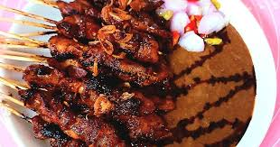

Makanan
Martabak bangka

Rp 22.000
Martabak bangka adalah makanan yang sudah tidak asing di dengar masyarakat indonesia martabak bangka ini makanan khas orang bangka namun martabak bangka adalah salah satu makanan terfavorit di kota Binjai
Makanan
Mie Ayam

Rp 18.000
Mie ayam adalah makanan yang sangat enak di indonesia mie ayam biasanya banyak di gemari oleh mahasiswa dan masyarakat kota Binjai sehingga kuliner ini sangat terfavorit hingga saat ini.
Makanan
Sate
Rp 20.000
Sate kacang adalah makanan yang sangat enak di indonesia sate kacang biasanya banyak di gemari oleh mahasiswa dan masyarakat kota Binjai sehingga kuliner ini sangat terfavorit hingga saat ini.